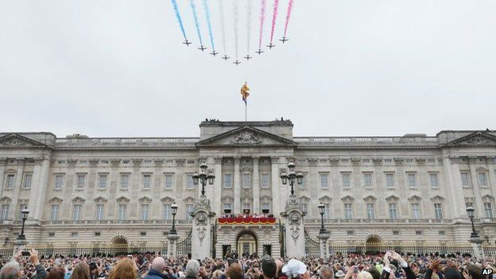

Sign In
Sign In
Saturday May 13, 2015 Last Updated at 12:10 GMT
Pollution to spread accross England
BBC royal correspondent Nicholas Witchell said there was no doubt Prince George's first appearance on the balcony was the "headline image" of the day.
Trooping the color ends in flypast Prince royal balcony tradition